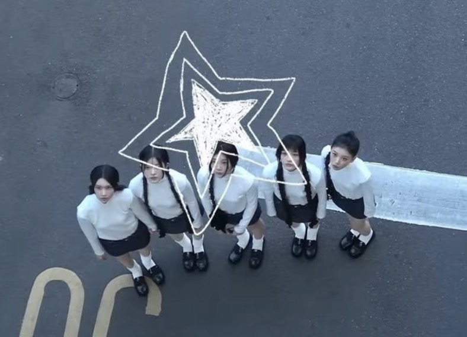

System Loading...
正在同步 ILLIT 核心数据...
0%
WELCOME_TO_ILLIT.exe
_
▢
X
Magnetic Love! 🎧

欢迎回来！经典复古频道与系统已全部准备就绪。
🎶 音乐与频谱
📸 合照拍立得
Status: Online
Core: RetroOS v2.6
Works_Timeline_History.sys
_
▢
X
📅
选择年份查看发展历程：
2024
Module: History.sys
Active
Stage_Energy_Monitor.sys
_
▢
X
⚡ [ENERGY_WAVE_OUTPUT]
Vibe指数:
98.5
BPM
系统功率:
1.2
kW
🔥 注入能量
🔄 重置波形
Stream: Live
FPS: 60